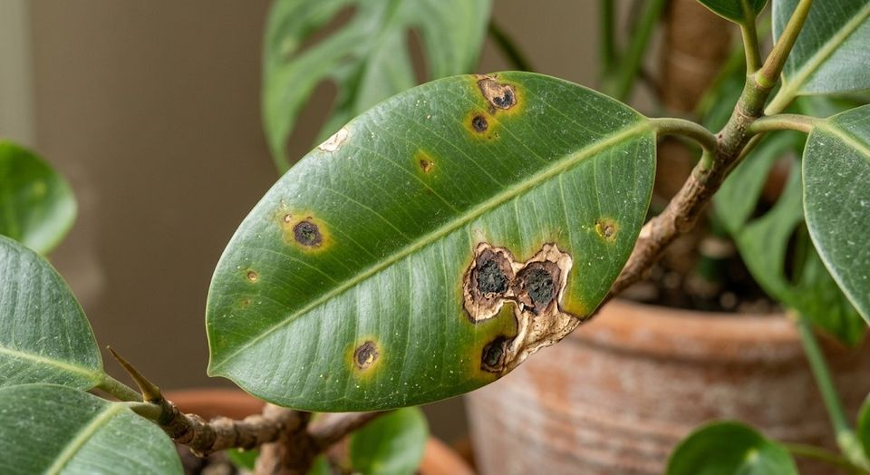
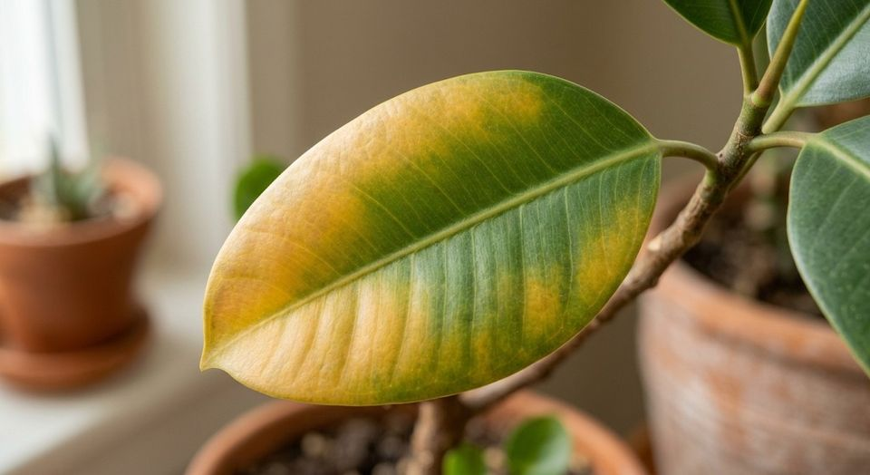
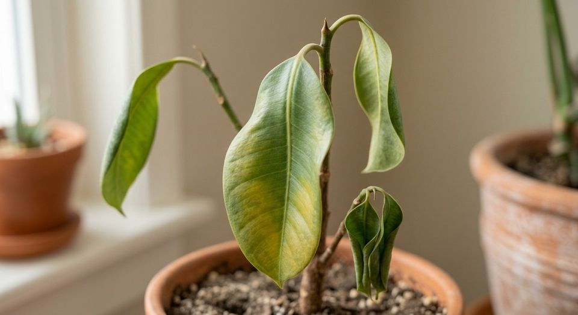

כתמים
אזורים על העלה בצבע שונה מהשאר: בהירים, חומים או דהויים.
שימו לב: באילו עלים הם מופיעים, ובאיזה צד של הצמח?
שלום לומדת/לומד יקר/ה!
מכירים את הסימנים, מבינים את הסיבות ולומדים להקשיב למה שהצמח שלנו צריך.
הצהבה, כתמים או עלים נבולים? לפעמים שינוי קטן במראה הצמח הוא סימן לכך שמשהו בתנאי הגידול שלו אינו מתאים.
ביחידה נלמד להתבונן בצמח, לחקור מה עשוי לגרום לשינוי ולבדוק את הרגלי הטיפול שלנו.
זמן למידה: כ-10 דקות
לפני שמחפשים סיבה, מתבוננים: מה השתנה, איפה בדיוק ומתי זה התחיל. אלה שלושת השינויים הנפוצים שכדאי לזהות בעלים.

אזורים על העלה בצבע שונה מהשאר: בהירים, חומים או דהויים.
שימו לב: באילו עלים הם מופיעים, ובאיזה צד של הצמח?

העלה מאבד את הצבע הירוק שלו, כולו או בחלקים.
שימו לב: האם מצהיבים העלים הישנים בתחתית או דווקא העלים החדשים?

העלים והגבעולים רפויים ושמוטים במקום לעמוד זקופים.
שימו לב: האם כל הצמח נבול, או רק חלק ממנו?
ניגשתם להשקות את הצמח החדש שקניתם, ופתאום שמתם לב שמשהו השתנה בעלים.
חשפו את הרמזים, בחרו מה כדאי לבדוק ועזרו לחקור מה קורה לצמח.
מיכל שמה לב שעלים של הפיקוס שלה מתחילים להצהיב. היא לא בטוחה מה הסיבה, וביקשה מכם לעזור לה לחקור.
אור, מים ואוויר לשורשים. כשאחד מהם לא מאוזן, הצמח מראה זאת בעלים. כל כרטיס מסביר למה זה קורה, מה מגביר את הסיכון ואיך בודקים.
לחצו על כל כרטיס כדי להפוך אותו.
כשהאור חזק מכפי שהעלים רגילים אליו.
צריבת שמש
למה זה קורה? כשצמח עובר בבת אחת ממקום מוצל לשמש חזקה, האור העז מפרק את הכלורופיל ומחמם את רקמת העלה. לפעמים מספיקה שעה אחת.
מה מגביר את הסיכון? העברה פתאומית למקום מואר, למשל הוצאה למרפסת, וחשיפה לשמש של שעות הצהריים.
איך בודקים? האם השינוי הופיע זמן קצר אחרי שהצמח הועבר, ובעיקר בעלים שפונים לשמש?
איך מונעים? מעבירים בהדרגה: מתחילים באור בהיר בלי שמש ישירה, ומגדילים את החשיפה לאט. עלה שנצרב לא יחזור לקדמותו, אבל הצמח יכול להתאושש בצמיחה חדשה.
כשהשורשים נשארים במצע רווי מים.
השקיית יתר
למה זה קורה? השורשים צריכים חמצן. כשהמצע רטוב כל הזמן, אין להם אוויר, והם עלולים להירקב.
מה מגביר את הסיכון? עציץ בלי חורי ניקוז, מים שעומדים בצלחת, עציץ גדול מדי ביחס לצמח ומצע כבד שמחזיק הרבה מים.
סימנים נוספים: נשירת עלים, זבובונים קטנים סביב האדמה, ואפילו נבילה, כי שורשים פגועים לא מצליחים להוביל מים.
איך מונעים? משקים עד שהמים יוצאים מהתחתית, ומרוקנים את הצלחת בתוך כשעה.
כשהמצע מתייבש יותר מדי בין ההשקיות.
מחסור במים
למה זה קורה? כשהמצע מתייבש מאוד, חלק מהשורשים נפגעים, ובכל פעם שזה חוזר הנזק גדל.
מה מגביר את הסיכון? עציץ קטן ביחס לצמח, עציץ חרס לא מזוגג שמתייבש מהר, ומקום חם ליד מקור חום.
סימן נוסף: האדמה מתכווצת ומתרחקת מדפנות העציץ, והמים זורמים בצדדים ישר לצלחת בלי להרטיב את השורשים.
מה עושים? אם המצע יבש מאוד, טובלים את העציץ במים עד שהבועות מפסיקות לעלות, ואז מנקזים היטב.
בסרטון נכיר כמה טיפים פשוטים לטיפול נכון בצמחי הבית: איך להתאים לצמח את התאורה, מתי להשקות ואיך לבדוק את מצב המצע.
סימן אחד לבדו לא מספיק כדי לדעת מה קרה, ולעיתים כמה גורמים פועלים יחד. הבדיקות בטבלה עוזרות להבחין ביניהם.
| מה רואים? | גורמים אפשריים | הבדיקה שעוזרת להבחין |
|---|---|---|
| עלים נבולים | מחסור במים, וגם השקיית יתר שפגעה בשורשים | מצע יבש ועציץ קל מצביעים על מחסור. אם המצע רטוב, לא משקים שוב, ובודקים ניקוז. |
| עלים מצהיבים | השקיית יתר, מחסור במים, ולפעמים עודף דשן | בודקים את המצע בעומק של פרק אצבע ונזכרים מתי הצמח קיבל דשן לאחרונה. |
| כתמים בהירים או דהויים | צריבת שמש, או הסתגלות של הצמח למקום מואר חדש | האם הצמח הועבר לאחרונה? האם השינוי מופיע בעיקר בעלים שחשופים לשמש? |
לפניכם שישה מקרים חדשים. קראו את הפרטים, וחשבו איזה גורם הוא הסביר ביותר.
גררו כל כרטיסייה לקטגוריה המתאימה.
בחרו לכל כרטיסייה קטגוריה מהתפריט.
במקלדת: עברו לכרטיסייה עם Tab והקישו 1, 2 או 3 כדי להעביר אותה לקטגוריה, או 0 כדי להחזיר אותה.
יעל הוציאה את הצמח מהסלון המוצל למרפסת, ביום שמשי ראשון אחרי החורף. כבר בערב הופיעו בעלים העליונים אזורים בהירים ודהויים.
עומר העביר צמח קטן לעציץ ענק, "שיהיה לו מקום לגדול". אחרי כמה שבועות הצמח נבול, אף שהאדמה עדיין לחה.
אחרי שבועיים של חופשה, האדמה התכווצה ונפרדה מדפנות העציץ, והמים שנשפכים זורמים ישר לצלחת.
בצלחת שמתחת לעציץ תמיד עומדים מים, וזבובונים קטנים מתעופפים סביב האדמה.
הצמח הועבר מפינת החדר לאדן חלון שהשמש פוגעת בו בצהריים. רק העלים שפונים לחלון שינו את צבעם.
הצמח גדל בעציץ חרס קטן ליד תנור חימום. כשמרימים את העציץ הוא קל מאוד, והעלים רפויים.
קראו את המקרה וענו על שתי השאלות. התשובות כאן נכנסות לציון שלכם ביחידה.
ענו על כמה שאלות קצרות על הרגלי הטיפול שלכם, ובסוף תקבלו משוב עם טיפים שיעזרו לכם לשמור על הצמחים בריאים. בשאלות על ההרגלים אין תשובות נכונות או שגויות.
כדי להבין מה הצמח צריך, מתבוננים בו, בודקים את תנאי הגידול שלו ולא ממהרים להסיק מסקנות. סימן אחד הוא רק רמז, והתמונה המלאה מגיעה מכמה בדיקות יחד. אם הסימנים נמשכים, צוות המשתלה ישמח לעזור.
קודם מתבוננים, אחר כך משקים